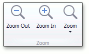

Adjust the Document View
This topic describes the features that adjust the view in the PDF Viewer.
The document consists of the following sections.
Rotate a Document
To rotate a document, use the following commands.
Rotate Clockwise
Rotates the document clockwise through 90 degrees. To perform this command, right-click the viewed document, choose the Rotate Clockwise item, or press Ctrl + Shift + Add.

Rotate Counterclockwise
Rotates the document counterclockwise through 90 degrees. To do this, invoke the context menu by right-clicking the document, choose the Rotate Counterclockwise item, or press Ctrl + Shift + Subtract.
Zoom In and Out of a Document
Use buttons from the Zoom button group of the PDF Viewer tab.

To zoom in a document, click the Zoom In button on the toolbar, or press Ctrl+Plus sign.
To zoom out of a document, click the Zoom Out button on the toolbar, or press Ctrl+Minus sign.
To zoom in or out of a document, you can also hold down Ctrl and rotate the mouse wheel.
Using Marquee Zoom Tool
The Marquee Zoom tool allows end users to zoom in a particular part of the page.
To activate the Marquee Zoom tool:
- right-click the viewing document;
select the Marquee Zoom item in the context menu.

You can perform the following actions:
zoom in on a portion of a page by dragging a rectangle around it;

- increase the zoom level by clicking;
- decrease the zoom level by clicking while pressing the Ctrl key.
Use a Specific Zoom Factor
To zoom to a specific zoom factor, click the Zoom dropdown list button. The following list will be invoked.

Choose the percentage value of the zoom factor or one of the following zoom factor presets.
Actual Size
Sets the document zoom factor value to 100%.
Zoom to Page Level
Sets the document zoom factor value to fit to the widest or highest page in a document.
Fit to Width
Sets the document zoom factor value to fit to the width of the widest page in a document.
Fit to Visible
The document zoom factor is calculated to fit to the width of the visible content of a page. The region of the visible page content is defined by the bleed box. If the bleed box is not defined, the Fit to Visible mode operates the same as Fit to Width mode.